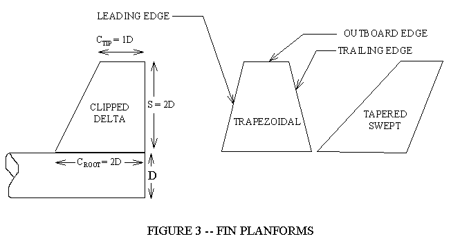
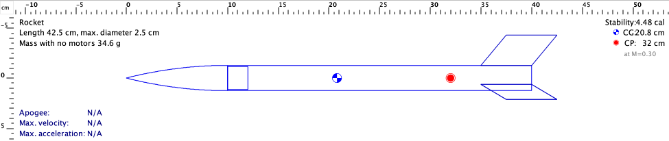

Aletas: forma, posición y alineación
Comparar contornos de aletas y preparar piezas repetibles con un útil de alineación.
Por qué el cohete lleva aletas atrás
Las aletas son superficies sobre las que actúa el aire cuando cambia la orientación del cohete. Su contribución a la estabilidad depende del conjunto y de su ubicación. Para nuestro primer diseño interesa que todas tengan la geometría definida y queden alineadas. Una buena silueta en el programa no corrige una pieza torcida en el montaje.

La raíz se une al cuerpo. La punta del trapecio es el borde exterior paralelo a la raíz. La semienvergadura es la distancia radial desde el cuerpo. El barrido desplaza la punta hacia atrás. Esas medidas deben poder señalarse en un recorte, localizarse en CAD e introducirse en OpenRocket.
Imagina el cohete avanzando y desviando ligeramente su punta. El aire llega con otra dirección relativa y actúa sobre las superficies exteriores. Las aletas posteriores contribuyen a la respuesta aerodinámica del vehículo. Su papel depende de su tamaño, posición y del conjunto del cohete. Para comprenderlo basta relacionar una vista lateral con la ubicación de las superficies. Las clases de estabilidad retomarán esa observación; hoy nos interesa que las aletas construidas correspondan a las que aparecen en el modelo.
Comparar contornos con criterios de taller
Qué ofrecen formas habituales
| Contorno | Para aprender a construir | Detalle que revisar |
|---|---|---|
| Triangular | Trazado sencillo y pocas referencias | Punta y longitud de unión |
| Trapezoidal | Raíz y punta se cambian por separado | Barrido y repetición |
| Elíptico | Contorno continuo para comparar | Corte o impresión fiel al plano |
| Muy barrido | Permite discutir posición y protección de bordes | Parte que sobresale y posibles golpes |
Cambiar forma también puede cambiar área, masa y superficie de unión. Por eso no basta decir “la triangular vuela mejor”. Primero debemos saber si se mantuvieron las otras medidas y qué misión se comparó. En un taller inicial puede pesar más la facilidad de repetir tres piezas iguales que una pequeña diferencia del modelo aerodinámico.
La forma más simple evita otro problema
Un equipo puede cortar tres trapecios iguales con una plantilla, pero sus tres aletas curvas salen diferentes.
Razonamiento del caso
Para el primer montaje, el trapecio ofrece una ventaja de repetibilidad. La decisión se basa en el proceso disponible. No afirma una superioridad universal del trapecio ni reemplaza la revisión de estabilidad.
Conserva una plantilla maestra y utiliza la misma referencia de medida. Si comparas dos contornos, mantén definida la forma de unirlos al cuerpo y documenta su masa. El nombre de la figura no resume todo el diseño.
Una comparación de contornos requiere mirar también el área. Como ejemplo de geometría plana, un trapecio con raíz de 50 mm, punta de 25 mm y semienvergadura de 22 mm tiene un área de (50 + 25) × 22 / 2 = 825 mm². Un triángulo de raíz 50 mm y altura 22 mm tiene 550 mm². Aunque comparten dos medidas, no tienen la misma área. Si luego cambia una predicción, la palabra “triangular” no explica por sí sola qué cambió.
La raíz es el borde de referencia cercano al cuerpo. La punta o cuerda de punta es el borde exterior en un contorno trapezoidal. Los bordes de ataque y de salida encuentran y dejan el flujo en el sentido de avance. La semienvergadura mide cuánto sobresale la aleta desde el cuerpo. Una forma barrida desplaza parte de esa superficie hacia atrás. Estos nombres sirven para señalar el plano y detectar diferencias entre dos piezas, incluso antes de usar cualquier cálculo.
Tres o cuatro aletas: también cambia el montaje
Tres aletas equiespaciadas se separan 120° alrededor del cuerpo. Cuatro se separan 90°. Una vista lateral puede esconder una pieza; por eso la distribución se revisa también desde atrás. El útil de alineación ayuda a conservar ángulos y dirección mientras el conjunto se monta según el proceso aprobado.
Comparación para un mismo taller
| Opción | Lo que cambia | Qué observar |
|---|---|---|
| Tres aletas | Tres piezas y tres uniones | Separación 120° y simetría |
| Cuatro aletas | Una pieza y una unión adicionales | Separación 90° y masa total |
| Aleta integrada impresa | Posición fijada por el archivo y la impresión | Deformación, masa y posibilidad de reparación |
Masa de un cambio de cantidad
En un ejercicio, cada aleta pesa 2 g. Tres suman 6 g y cuatro suman 8 g.
Razonamiento del caso
El cambio añade 2 g en esa parte del vehículo, además de cualquier diferencia de unión. No permite calcular cuánto cambia la estabilidad o la altura. Para eso se actualiza el conjunto y se compara con iguales condiciones.
No confundas cantidad con alineación. Cuatro piezas torcidas no se vuelven correctas por ser cuatro. Si el útil deja una aleta inclinada respecto al eje, hay que corregir el útil o el montaje antes de atribuir al contorno un comportamiento inesperado.
OpenRocket: cambiar una cosa cada vez

- Abre el modelo y guarda ALETAS_A. Selecciona el conjunto y registra cantidad, raíz, punta, semienvergadura, barrido y espesor.
- Haz una copia ALETAS_B y cambia solamente el contorno que deseas comparar. Si cambian otras medidas, escríbelas en la tabla.
- Revisa la posición de la raíz respecto al extremo del cuerpo. Comprueba la referencia usada por el programa.
- Usa vista posterior para revisar cantidad y distribución. Después observa la vista lateral.
- Conserva las dos versiones. La comparación de vuelo se completará después de introducir materiales y masas reales.
Si un contorno libre resulta difícil de reproducir en CAD o fabricar, vuelve a una forma que puedas comprobar. La libertad del programa sirve para representar tu pieza; no obliga a complicarla. [OR1]
La alineación se revisa en dos vistas. En una vista posterior interesa la separación alrededor del tubo. En la vista lateral interesa la dirección y la posición longitudinal de las raíces. Un útil que solo fija el ángulo entre aletas puede dejar libre otra desviación. Por eso conviene presentar el conjunto sin pegarlo y observarlo desde ambos lados. El útil facilita repetir una posición; su presencia no demuestra por sí sola que todas las referencias sean correctas.
Práctica: plantilla y útil de alineación
La plantilla define el contorno de la aleta. El útil define cómo se coloca respecto al tubo y al eje del vehículo. Son piezas distintas: una aleta bien cortada puede montarse mal, y un útil preciso no repara un contorno diferente al plano. En impresión 3D, el útil puede ser una de las aplicaciones más útiles del taller.
- Dibuja el contorno con las cotas que se conservarán en el archivo de OpenRocket. Identifica raíz y cara de referencia.
- Comprueba las piezas una sobre otra o con la plantilla, sin forzar ni dar por iguales medidas que no se han tomado.
- Presenta el útil sobre el tubo real y observa si altera su forma.
- Revisa posición de las raíces, separación angular y dirección de las piezas sin pegarlas.
- Anota una corrección del útil o de la pieza. El docente aprueba el proceso de unión correspondiente al material.
Qué debe mostrar la fotografía del equipo
| Vista | Qué permite revisar |
|---|---|
| Lateral | Posición longitudinal y orientación |
| Posterior | Cantidad y separación regular |
| Detalle de raíz | Presentación de la unión |
| Con plantilla | Coincidencia de contornos |
La fotografía necesita una referencia y un ángulo útil. Una imagen oblicua atractiva puede ocultar desalineación. Conserva al menos una vista lateral y otra posterior.
El útil y la plantilla deben compartir las referencias del plano. Una marca puede corresponder al comienzo de la raíz y otra al extremo del cuerpo. Si la pieza impresa incorpora pestañas o detalles de montaje, estos deben aparecer en su CAD y ser compatibles con la solución de unión aprobada. El contorno que ve el aire y el detalle usado para montar no se confunden al introducir las medidas exteriores del modelo.
Qué aleta conviene para cada misión
Una elección que se pueda comprobar
| Misión | Criterio principal | Comprobación |
|---|---|---|
| Primer montaje | Piezas repetibles | Plantilla y útil |
| Reutilización | Reparación y protección de bordes | Revisión tras montaje y uso |
| Carga docente | Compatibilidad con masa y configuración | Modelo completo y revisión del responsable |
La conclusión del equipo debe distinguir geometría, fabricación y funcionamiento. “Elegimos tres trapecios porque los repetimos y alineamos con nuestro útil” es una decisión de fabricación. “El conjunto simulado cumple las condiciones revisadas por el docente” es otra afirmación y requiere el archivo completo. Todavía no se debe convertir una en la otra.
Qué harías ante una discrepancia
El modelo usa tres aletas simétricas, pero la fotografía muestra una raíz más adelantada que las demás.
Razonamiento del caso
Primero corrige o representa la fabricación real. No cambies un coeficiente del programa para ocultar la diferencia. El archivo y el objeto deben describir el mismo conjunto.
Entrega la comparación de contornos, el plano de la alternativa elegida y el útil de alineación. Identifica qué se revisará físicamente en el taller 1. La fabricación deja de ser una lista de instrucciones cuando el equipo puede explicar cómo comprobó cada decisión.
Preguntas de cierre
¿Tres aletas se separan 90°?
No. Si están equiespaciadas, 360/3 = 120°.
¿Comparar siluetas prueba cuál vuela mejor?
No. También importan medidas, posición, masa y conjunto.
¿Qué resuelve el útil?
Ayuda a conservar la posición y orientación durante el montaje.
Entrega
Plano, dos versiones .ork, plantilla y propuesta de útil.
Bibliografía y procedencia
[NK] Richard Nakka. Fins for Rocket Stability.
[OR1] OpenRocket. Basic Rocket Design.
[BODY] OpenRocket. Body Components Basics.
[PR1] Prusa Research. Modeling with 3D printing in mind.